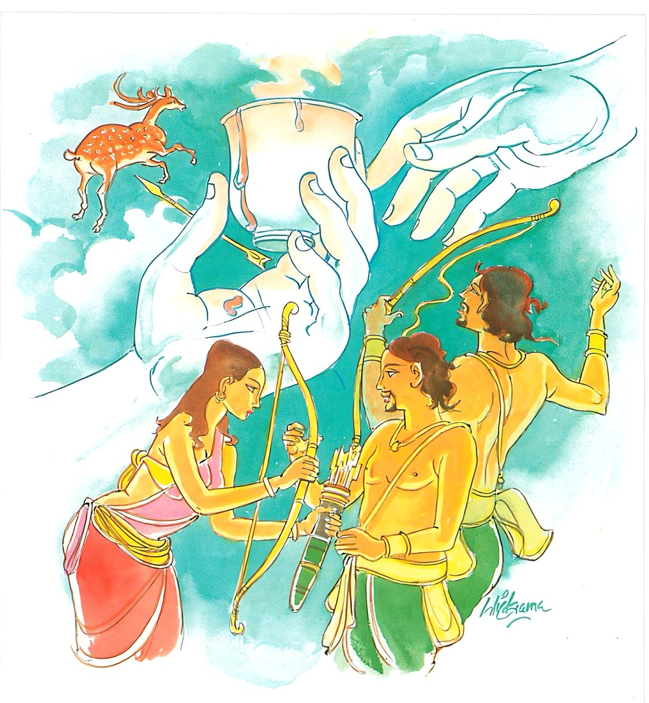

9-8 අටවන කුක්කටමිත්ත වැද්දාගේ වස්තුවයි.
මෙම කතාව සද්ධර්ම සාගරයෙන් ද කියවන්න.
පාණිම්හි චෙ වණො නාස්ස හරෙය්ය පාණිනා විසං
නාබ්බණං විසමන්වෙති නත්ථි පාපං අකුබ්බතො.
ඉදින් අත්ලෙහි ව්රණයෙක් නො වී නම්, අත්ලෙන් විෂය ගන්නේ ය (හෙවත් ගන්නට පොහොසත් වන්නේ ය). කුමක් හෙයින? යත්: අත්ලෙහි ව්රණයක් නැත්තහු අනුව (ස්ථාවර ජඞ්ගම වශයෙන් විප්රකාර වූ ම) විෂය නො යන්නේ ය (අත්ලෙහි ව්රණයක් නැත්තහු අතින් ගත් විෂය ඔහු සිරුරැ ව්යාප්ත නො වන්නා සේ) (තුන් දොරින්) පව් නොකරන්නාහු (ශරචාපාදිය එළවා දුන් නමුදු අකුශල චේතනා නැති හෙයින් සිදු වන) අකුශල කර්මයෙක් නැත.

පාණිම්හි චෙ ආදි මේ ධර්මදේශනාව බුදුරදුන් වේළුවන විහාරයෙහි වැඩසිටින කාලයේ කුක්කුටමිත්ත නම් වැදිපුත්රයා නිමිතිකරගෙන දේශනා කරනලදි.
රජගහනුවර එක් සිටුදුවක් වැඩිවිය පැමිණ සත්මහල් පහයක ඉහළම පහයේ සිරියහන් ගැබක තබා එකම සේවිකාවක් දී මවුපියන් විසින් පෝෂණය කරනලදුව සිටියාය. දිනක් සවස් භාගයෙහි වාකවුළුවෙන් ඇතුළුවීථිය දෙස බලා සිටින ඈට තොණ්ඩු පන්සීයක්ද උල් පන්සීයක්ද රැගෙන මුවන් මරා ජීවත්වන එක් කුක්කුටමිත්ත නම් වැද්දෙක් පන්සීයක් මුවන් මරා ඔවුන්ගේ මස්වලින් ගැල්පුරවාගෙන ගැල් අසුනේ හිඳගෙන මස් විකිණීම සඳහා නගරට පිවිසෙනු දැක ඔහු හා පිළිබඳසිත් ඇතිකරගෙන තම සේවිකාවට කථා කොට, ඇගේ අතට ලිපියක් දී, යව, මොහු පිටත්වන වේලාව දැනගෙන එවයි යැවුවාය.
ඈ ගොස් ඔහුට ලියුම දී පිටත්වන වේලාව ඇසුවාය. අද මස් විකුණා හෙට පාන්දරම අසවල් දොරටුවෙන් නික්ම යමියි කීවේය. ඈ ඔහුගේ කථාව අසා අවුත් සිටුදියණියට එය කීවාය. සිටුදුව තමන්ගේ ගතයුතු වස්ත්රාභරණ සියල්ල සූදානම් කරගෙන උදෑසනම කිලිටිවස්ත්ර හැඳපෙරවාගෙන කළයක්ද රැගෙන දාසියන් සමග නානතොටට යන්නාක් මෙන් පිටත්වී නියමිත තැනට ගොස් ඔහු එන මග බලමින් සිටියාය. ඔහුද ගැල පදවාගෙන ආවේය. ඈ ඔහුගේ පසුපසින් ගියාය. ඔහු ඈ දෙස බලා, මම තී කාගේ දුවක්දැයි නොහඳුනමි. මෑණියනි, මා පිටුපසින් නොඑවයි කීවේය. මම ඔබේ ඉල්ලීමක් අනුව නොඑන්නෙමි. මගේ කැමැත්තෙන් එන්නෙමි. ඔබ නිශ්ශබ්දව ඔබේ රිය පදවාගෙන යන්න. ඔහු නැවත නැවතත් වැළැක්වූයේමය. ඉන්පසු ඈ ඔහුට මෙසේ කීවාය. ශ්රියාව තමන් ළඟට එන විට වැළැක්වීම නොවටී. හෙතෙම ඈ නිසැකයෙන්ම එනබව දැන ඇය ගැලෙහි නංවාගෙන ගියේය. ඇගේ මවුපියෝත් ඈ ගැන එහෙමෙහෙ සොයා බලා ඈ නොදැක මැරෙන්නට ඇතියි සිතා මතකවත් ආදිය දුන්හ. ඈ ඔහු සමග සංවාසයට පැමිණ පිළිවෙලින් පුතුන් සදෙනෙකු ලබා ඔවුන් වියටපත් කල්හි ගෘහබන්ධනයෙන් බැන්දවීය.
ඉන්පසු දිනෙක ශාස්තෘන්වහන්සේ උදෑසනම ලොව බලනසේක් පුතුන් භාර්ය්යාව හා කුක්කුටමිත්ත තම ඤාණදැලට ඇතුළත්වූ බව දැක, මේ කිමෙක්දැයි සොයා බලනසේක් ඒ පසළොස් දෙනාම සෝවාන්මගට හේතුසම්පත් ඇත්තවුන්බව දැක, උදෑසනම පාසිවුරු දරා ඔවුන්ගේ නිවහන බලා වැඩමවූහ. එදින ඔවුන්ගේ පාසවලට එක් මුවෙක්වත් හසුනූණේය. ශාස්තෘන්වහන්සේත් ඔහුගේ මලපුඩුපාස තිබෙන තැනම පියවරතබා පෙන්වා එයින් එහා රුක්ගොමුවක් යට වැඩහුන්හ. කුක්කුටමිත්ත උදෑසනම දුන්නත් රැගෙන මලපුඩු ඇති තැනට ගොස් මුල පටන් ඒ මලපුඩු බලා, පාසයන්හි බැඳුණු එකම මුවෙක්වත් නොදැක බුදුරදුන්ගේ පියවර සටහන් දුටුවේය. කවුරුන් හෝ මගේ පාසවල බැඳුණු මුවන් මුදමින් ඇවිදියි, කියා සිතක් ඇතිවිය. හෙතෙම බුදුන් කෙරෙහි ආඝාත බැඳ යනවිට රුක්ගොමුමුල වැඩසිටි බුදුන් දැක, මොහු මගේ මුවන් මුදාහරින්නට ඇත, මොහු මරා දමන්නෙමියි දුන්න ඇද්දේය. දුන්න අදිනු දුටු බුදුරජාණන්වහන්සේ, එයින් විදින්ට ඉඩ නොදුන්හ. හෙතෙම ඊතලය විදහැරීමට හෝ එයින් ඉවතට ගැනීමට හෝ නොහැකිව පතුඇට බිඳීයන්නාක් මෙන්, වේදනා විද කටින් කෙළ පෙරපෙරා දුන්න ඇද වෙහෙසට පත්විය.
ඉන්පසු ඔහුගේ පුත්තු ගෙදර ගොස් අපේ පියා ඒමට පමා වෙයි. ඒ කුමක් නිසාදැයි කීකල්හි, මවුතොමෝ දරුවනි පිටත්වී යව්යයි පිටත් කළ නමුදු දුනුත් රැගෙන ගිය නමුත් ඒ දුටු ගැනීමට අපොහොසත්ව සිටි පියා දැක, අපේ පියාට පසමිතුරෙක් වියහැකියයි සත්දෙනාම දුනු ඇදගෙන, බුද්ධානුභාවයෙන් යම් සේ ඔවුන්ගේ පියා සිටියේද, එපරිද්දෙන්ම ඔවුහුද සිටියාහුය. ඉන්පසු ඔවුන්ගේ මව, මගේ පුතුනුත් පමා වන්නේ ඇයිදැයි යෙහෙළියන් සත්දෙනාත් සමග ගොස් ඉහත සඳහන් පරිදි සිටි ඔවුන් දැක, මොවුන් මේ දුනුදිය ඇදගෙන සිටින්නේ කාටදැයි බලන විට බුදුරදුන් දැක, ඉසඅත් බැඳගෙන, මගේ පියා නොනසව, මගේ පියා නොනසවයි මහහඬින් ශබ්ද කළාය. කුක්කුටමිත්ත ඒ ශබ්දය අසා අනේ අපි නැහුණා. මේ අපේ මාමා නේද, අපි මහා බරපතළ වරක් කෙළෙමුයයි සිතීය. ඔහුගේ පුත්රයෝත්, අනේ අපේ අත්තා නේද මේ, අපි මහා බරපතළ වරදක් කෙළෙමුයයිද සිතූහ.
කුක්කුටමිත්ත මේ මගේ මාමායයි මෙත්සිත උපදවා ගත්තේය. පුත්රයෝ මේ අපේ අත්තායයි මෙත්සිත් උපදවා ගත්හ. ඉන්පසු ඔවුන්ගේ මවු සිටුදුව, වහාම දුනු පසෙක දමා මගේ පියා සමාකරගනිව්යයි කීවාය. ශාස්තෘන්වහන්සේ ඔවුන් මෘදු සිත් ඇත්තවුන්කොට, දුනු බහා තබන්ට අවස්ථාව ලබාදුන්හ. ඉන්පසු ඒ සියලු දෙනාම බුදුන් වැඳ ස්වාමීනි අපට සමාවුව මැනවියි සමාකරවාගෙන, එක් පැත්තක හිඳගත්හ. බුදුරජාණන්වහන්සේ ඔවුන්ට පිළිවෙල කථාව වදාළහ. දේශනා කෙළවර කුක්කුටමිත්රයාත් සමග පුතුන් යෙහෙළියන් පසළොස් දෙනා සෝවාන්ඵලයෙහි පිහිටියාහුය.
බුදුරජාණන්වහන්සේ පිඬුසිඟා වැඩ සවස් වේලෙහි විහාරයට පැමිණියහ. ඉන්පසු ආනන්ද තෙරණුවෝ, ස්වාමීනි, කොහි වැඩිසේක්දැයි ඇසූහ. ආනන්ද කුක්කුටමිත්ත සමීපයටයයි වදාළහ. ඒ ප්රාණාතිපාතිකියා එසේ නොකරන්නෙකු බවට පත් කෙළෙහිදැයි ඇසූහ. ආනන්දයෙනි එසේය. ඔහු තමන් පසළොස් වැනි කොට අචල ශ්රද්ධාවෙන් යුක්තව, ත්රිවිධරත්නය පිළිබඳ නිසැකවී ප්රාණවධ නොකරන්නෙක් වූයේය. භික්ෂූහු ස්වාමීනි, උන්ගේ භාර්යාවත් එහි සිටියා නොවේදැයි ඇසූහ. මහණෙනි, එසේය, ඈ කුලගෙයක කුමරියක්වී එකල්හිම සෝවාන්ඵලයට පැමිණ සිටියායයි වදාළහ.
භික්ෂූහු, කුක්කුටමිත්තගේ භාර්යාව කුමරියක්ව සිටියදීම සෝවාන්ඵලයට පැමිණ ඔහුගේ ගෙදරට ගොස් පුත්රයන් සත්දෙනෙක් ලැබුවාය. ඈ මෙතරම් කලක් දුන්න ගෙනෙව. ඊතලය ගෙනෙව. අඩයටිය ගෙනෙව, දැල ගෙනෙවයි කීකල ඒවා ගෙනවුත් දුන්නාය. තෙමේත් ඈ දුන් දේවල් රැගෙන වනයට ගොස් පරපණ නැසීම කළේය. කිම සෝතාපන්නයෝ ප්රාණාතිපාතය කරද්ද?
බුදුරජාණන්වහන්සේ අවුත්, මහණෙනි, කිනම් කථාවක් කරමින් හුන්නාහුදැයි විචාරා, මේ කථාවෙනුයි කීකල්හි, මහණෙනි, සොතාපන්නයෝ පරපණ නොනසත්. ඈ කර තිබෙන්නේ වචනය ඉටුකිරීම පමණකි. මෙන්න අර ආවුධය. මෙය ගෙන ගොස් සතුන් මරන්නැයි ඇයට සිතක් නැත. වණයක් නැතිවට ඒ අතින් විෂ ඇල්ලුවත් ඒ විෂය සිරුරට ඇතුළු කිරීමට නොහැකිය.
ඒ විධියට අකුසල චේතනාවක් එහි නොවන බැවින්, පව්නොකරන්නකු බැවින් දුනු ආදය ගෙනත් දුන්නත් පවක් නම් නොවන්නේමයයි වදාරා අනුසන්ධි ගළපා දහම් දෙසමින් මේ ගාථාවද ප්රකාශ කළහ.
අතෙහි වණයක් නැත්නම්
විසක් නැත අතට විස ගත්තත්
වණ නැති අයට විස නොවදී
පවක් නැත පව් නොකරන්නහුට
එහි නාස්ස යනු නොවන්නේය. හරෙය්ය යනු බැහැර කිරීමට හැකි ව්නනේය. කුමක් නිසාද? යම් හෙයකින් නාබ්බණං විසමන්වෙති තුවලායක් නැති අතක් විෂබීජ වර්ග ඇතුළට ගෙන යෑමට සමත් නොවෙයිද, එමෙන් දුනු ආදිය ගෙනවුත් දෙන්නාටද අකුසල චේතනා නොවන නිසා, පවක් නොකරන නිසා, පවක් නම් සිදුනොවේ. තුවාලයක් නැති අතක් බාහිර විෂබීජ ඇතුළට ගැනීමට අසමත් වන්නාක්මෙන් ඔහුගේ සිතද පාපය අනුව නොයයි. දේශනාවසානයෙහි බොහෝ දෙනා සෝවාන්ඵලාදියට පැමිණියාහුය.
ඉන්පසු කාලයක භික්ෂූන් අතර, මේ කුක්කුටමිත්තට පුතුන් ලේලිවරුන් සහිතව සොවාන්වීමට තිබූ හේතුසම්පත් මොනවාද? කිනම් කරුණක් නිසා වැදිපවුලක ඉපදුණේත් ඇයිදැයි කථාවක් ඇතිවිය. බුදුන් එතැනට වැඩමවා, මහණෙනි, මෙහි කථාකරමින් සිටියේ කුමක් පිළිබඳවදැයි අසා, මේ කතාවෙනියි කී පසු-
මහණෙනි, අතීතයෙහි කාශ්යප දසබලයන්වහන්සේගේ ධාතුචෛත්යයේ කටයුතු කරගෙන ගිය මිනිස්සු, මේ චෛත්යයට මැටි වශයෙන් කුමක් ගත යුතුද? ජලය වශයෙන් කුමක් ගතයුතුදැයි කථිකා කළහ. හිරියල් මනෝසීල මැටි වියයුතුය. තලතෙල් ජලය විය යුතුයය තීරණය කළහ. ඔවුහු හිරියල් මනෝසීල ගෙන කොටා තලතෙලෙන් අනා ගඩොල් කපා පුළුස්සා රන් ආලේප කර ඇතුළත බැන්දාහ. පිටපැත්ත ඒකඝන රත්තරනින්ම හැදූ ගඩොලින් බැන්දාහ. එක් ගඩොලක වටිනාකම ලක්ෂයක් විය. ඔවුහු ධාතු නිධාන ගර්භය තෙක් චෛත්යයෙහි වැඩ නිමවූ පසු ධාතුනිධාන වේලාවේ බොහෝ ධනය අවශ්ය වේ. එහි ප්රධානත්වය ගන්නේ කවුරුන්දැයි සිතූහ. එක් ගම්වැසි සිටුවරයෙක් මම ප්රධාන වන්නෙමියි කියා, ධාතුනිධාන අවස්ථාවේ එක්කෝටියක රත්රන් ගෙනත් තැබුවේය. ඒ දුටු රටවැසියෝ, මේ නගර සිටුවරයා ධනයම එකතුකරයි. මෙබඳු චෛත්යයක මූලිකයාවීමට අපොහොසත් වෙයි. ග්රාමවාසී සිටුවරයා කෝටියක ධනයක් යොදා මූලිකයාවීයයි දොස් කීහ. නාගරික සිටුවරයා ඒ අසා මම දෙකෝටියක් දී මූලිකයා වන්නෙමියි දෙකෝටියක් දුන්නේය. අනිකා මමම මූලිකයා වන්නෙමියි තුන්කෝටියක් දුන්නේය. මෙසේ වැඩි කරමින් ගොස් නාගරික සිටුවරයා අටකෝටියක් දුන්නේය. ග්රාමවාසී සිටුවරයාගේ ගෙදර තිබූ මුළු ධනය නවකෝටියක් විය. නාගරික සිටුහුගේ වත්කම සතළිස්කෝටියකි. ඒ නිසා ගම්වැසි සිටුවරයා, ඉදින් මම නවකෝටියක්, දසකෝටියක් දෙන්නෙමියි කීවොත් එයින් මා නිර්ධනයෙක් වෙයි. එසේ සිතූ ඔහු මෙසේ කීවේය: මම මෙපමණ ධනයකුත් දෙමි. දූ දරුවන් සහිතව චෛත්යයට දාසයෙක් වන්නෙමියි, පුතුන් සත්දෙනාත් යෙහෙළියන් සත්දෙනාත් භාර්යාවත් සහිත තමනුත් චෛත්යය උදෙසා පාවා දුන්නේය.
රටවැසියෝ, ධනය නම් උපයා ගත හැකිය. මොහු අඹුදරුවනුත් සමග තමන් චෛත්යයේ දාසභාවයට පත්වෙයි. මූලිකයා මොහුම විය යුතුයයි ඔහු මූලිකයා කළහ. මෙසේ ඔහු සෙසු ජනයාත් සමග චෛත්යයේ දාසභාවයට පත්විය. රටවැසියෝ නැවත ඔවුන් දාසභාවයෙන් නිදහස් කළහ. එසේවුවත් චෛත්යයට පිළිදැගුම් කරමින් ආයු ප්රමාණය ගෙවා එයින් චුතව දෙව්ලොව උපන්හ.
එක් බුද්ධාන්තරයක් දෙව්ලොව විසූ ඔවුහු මේ බුද්ධෝත්පාද කාලයේ භාර්යාව එයින් චුතව අවුත් රජගහ නුවර සිටුහුගේ දුවණියවී උපන්නාය. ඒ කුමරිය කුමාරිකා කාලයේදීම සෝවාන්ඵලයට පැමිණියාය. සත්යය අවබෝධ නොකළවුන්ගේ ප්රතිසන්ධිය අනියත හෙයින් සැමියා චුතව අවුත් වැදිපවුලක උපන්නේය. ඔහු දුටු මොහොතේම සිටුදුව කෙරෙහි පූර්ව ස්නේහය නැගී ආවේය. ඒ නිසා මෙසේත් කියා ඇත:
පෙර එක්ව විසුමේ
පුරුද්දෙන් මේ දිවියෙද
ප්රේමය හටගනී
විලෙහි උපුල් පිපෙන විලසින්
ඈද පෙර ස්නේහය අනුවම වැදිකුලයට ගියාය. ඔවුන්ගේද පුත්රයෝද දෙව්ලොවින් චුතව අවුත් ඇගේ කුස පිළිසිඳගත්තාහුය. යෙහෙළියෝද ඒ ඒ තැන්වල ඉපදී වැඩිවියට පැමිණ ඔවුන්ගේ ගෙවල්වලටම ආවාහ. මෙසේ ඒ සියලු දෙනාම චෛත්යය පළිසකරකරමින් ඒ පින්කමේ ආනුභාවයෙන් සෝවාන්ඵලයට පත්වූහ.